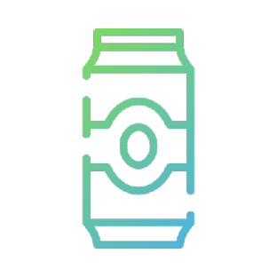

TF server es una API para la aplicación de modelos de redes neuronales hechos en keras y otros.
Se tiene las básicas implementaciones para redes neuronales de reconocimiento de números con keras.
Los modelos mayormente tiene una arquitectura basada en capas y modelos completos.

TF-server
Tecnologías y servicios: